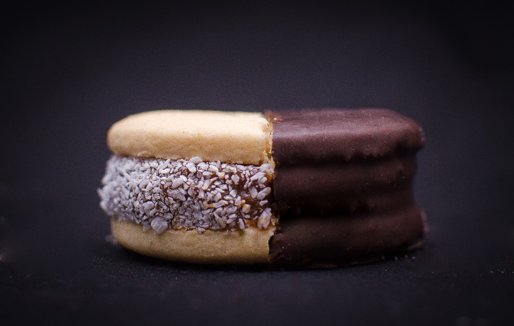

Nuestra fábrica familiar, ubicada en Malvinas Argentinas, Buenos Aires, nació con la pasión de compartir el sabor y la tradición de los alfajores artesanales. Desde nuestros inicios, hemos trabajado con dedicación para perfeccionar cada detalle, ofreciendo una línea de productos que incluye alfajores de maicena, bañados en chocolate, chocovolcán, y muchas otras delicias.
El secreto de nuestros alfajores radica en la calidad de nuestras materias primas, seleccionadas cuidadosamente para garantizar un producto de primera categoría. Cada bocado es una experiencia única, creada con el compromiso de llevar alegría a cada mesa.
Con una historia arraigada en el esfuerzo y la tradición familiar, nos enorgullece brindar a nuestro público una experiencia dulce que refleja nuestra pasión y amor por lo que hacemos. 💛